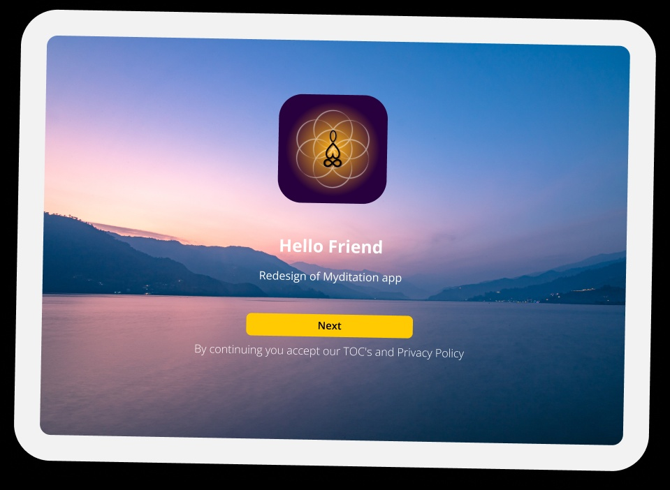
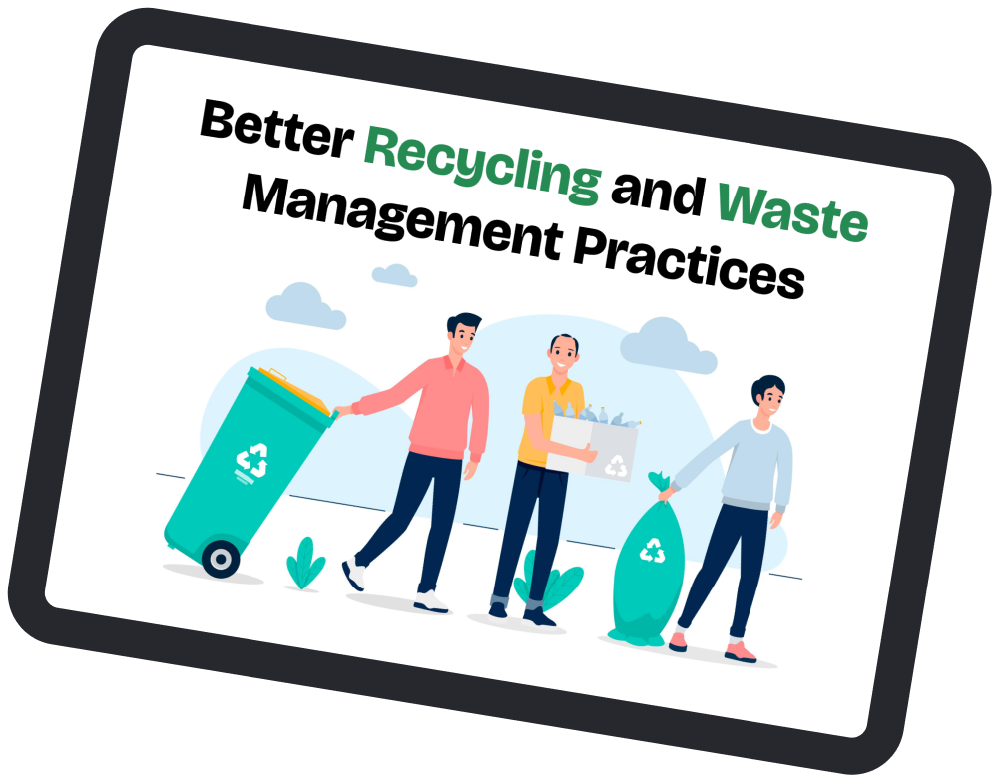
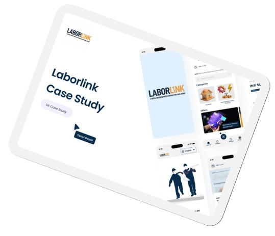
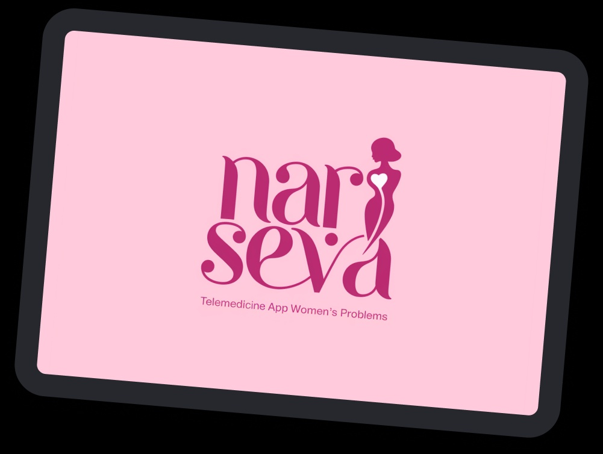
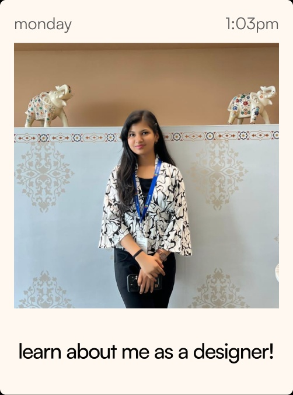

I design for people who usually get ignored.
Through accessibility, inclusive thinking, and real-
world problem solving.
Nari Seva, a telemedicine solution aimed at improving healthcare access for rural women in India. This project challenged me to create an inclusive and user-friendly platform, addressing the unique needs of a population often overlooked by traditional telemedicine apps. I utilized Figma and user research software.
View Case Study ↗This case study details the design and development of LaborLink, a mobile application designed to address the challenges faced by daily wage laborers in finding work and contractors in finding reliable, skilled labor. I, as the lead UX/UI designer, played a crucial role in shaping the app's user experience, focusing on accessibility and efficiency.
View Case Study ↗Sustainable living is a growing goal, yet most individuals struggle with waste sorting, recycling, and eco-friendly disposal due to lack of awareness, guidance, and motivation. This Design is a simple, interactive, and rewarding system that empowers users to build sustainable waste habits in their daily routine.
View Case Study ↗Stars & Divine is a wellness and astrology platform that blends mindful practices with personalized cosmic guidance. It offers meditation, affirmations, and healing experiences alongside expert-led astrological consultations, creating a holistic space for both inner clarity and external direction.
View Case Study ↗




Redesigned Myditation across web, tablet, and mobile for a unified experience. Designed intuitive interfaces for MediSyncro, focusing on usability and flow.
At Ritva, I contribute to crafting user-centered digital experiences by conducting user and market research, rendering meaningful content, and designing intuitive UI solutions.
As a UI Designer Intern at KranviK Solutions Private Limited, I designed the UI for their Application, Including 2 apps and design system.
Developed wireframes and prototypes to effectively communicate design ideas. Enhanced user experience by designing intuitive and visually appealing interfaces for web.